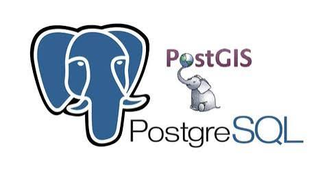
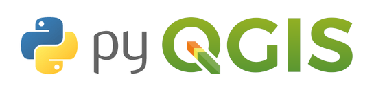
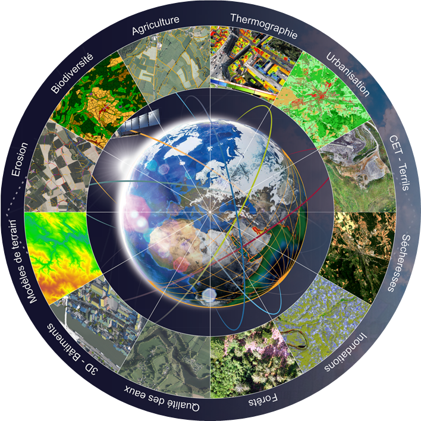
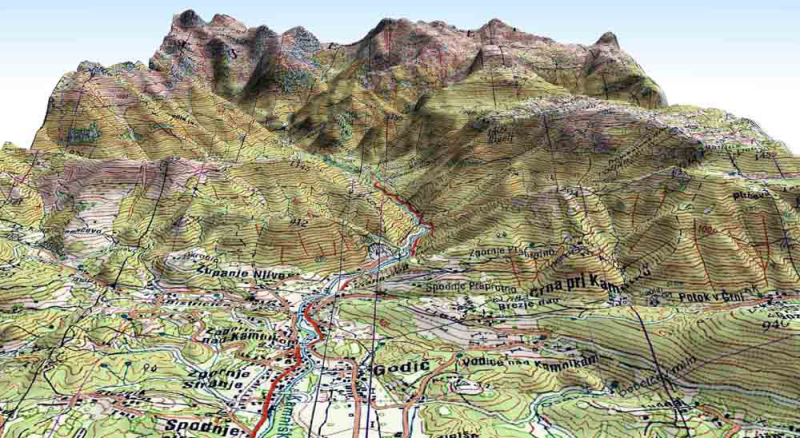

Documentation CPGEOM
Bienvenue dans ma documentation de formation CPGEOM - Chef de projet géomatique.
Ce site centralise mes notes de cours, mes exercices, mes fiches de révision, mes ressources techniques et mes travaux pratiques autour de la géomatique, des bases de données spatiales, de la télédétection, de Python, de QGIS et de la gestion de projet.
Vue d’ensemble
Repère |
Description |
|---|---|
Objectif |
Organiser progressivement les connaissances acquises pendant la formation CPGEOM. |
Contenu |
Cours, exercices, ressources, fiches et travaux pratiques. |
Usage |
Retrouver rapidement les notions importantes et construire un support professionnel réutilisable. |
Fil conducteur |
Cadrer un projet, structurer les données, contrôler la qualité, analyser et produire des livrables. |
Sommaire général
Thématique |
Description |
Accès |
|---|---|---|
Gestion de projet |
Méthodes, organisation, cadrage, planification, suivi et livrables |
|
Base de données & PostGIS |
PostgreSQL, PostGIS, SQL, schémas, géométries et index spatiaux |
|
Contrôle qualité |
Qualité des données, méthodes de contrôle, validation et fiabilisation |
|
Formats ESRI |
Shapefile, geodatabase, formats SIG et échanges de données |
|
Télédétection |
Images satellites, indices, classification et traitements raster |
|
Python & PyQGIS |
Automatisation, scripts Python, traitements QGIS et bibliothèques géomatiques |
|
Données & interopérabilité |
VRT, droit informatique, cycle de vie des données et métadonnées |
|
Géomatique, SIG & 3D |
QGIS, cartographie, projections, couches, analyse spatiale et représentation 3D |
Parcours conseillé
Étape |
Objectif |
Modules à consulter |
|---|---|---|
1 |
Comprendre le besoin et cadrer le travail |
|
2 |
Structurer et stocker les données |
|
3 |
Vérifier la qualité des données |
|
4 |
Automatiser et analyser |
|
5 |
Produire et valoriser les résultats |
Mes grandes thématiques
Gestion de projet
Cette partie regroupe les méthodes nécessaires pour conduire un projet géomatique de manière structurée.
On y retrouve notamment :
le cadrage du besoin ;
la rédaction d’une note de cadrage ;
l’identification des acteurs ;
la planification ;
le suivi des tâches ;
la gestion des risques ;
la communication projet ;
la rédaction de livrables.
Base de données & PostGIS

Cette section est consacrée aux bases de données relationnelles et spatiales.
Elle contient des notions sur :
PostgreSQL ;
PostGIS ;
les schémas ;
les tables ;
les clés primaires et étrangères ;
les requêtes SQL ;
les géométries ;
les index spatiaux ;
l’administration d’une base de données géographique.
Python & PyQGIS

Cette partie présente l’utilisation de Python pour automatiser les traitements géomatiques.
Les objectifs sont :
comprendre les bases de Python ;
manipuler des fichiers ;
utiliser des bibliothèques géomatiques ;
automatiser des traitements QGIS ;
créer des scripts PyQGIS ;
gagner du temps dans les tâches répétitives.
Télédétection

Cette section regroupe les notions liées aux images satellites et aux traitements raster.
Elle contient par exemple :
les images Sentinel ;
les bandes spectrales ;
les compositions colorées ;
le NDVI ;
la classification d’images ;
les traitements raster ;
l’analyse de l’occupation du sol.
Géomatique, SIG & 3D

Cette partie regroupe les notions principales liées aux systèmes d’information géographique.
On y trouve :
QGIS ;
la cartographie ;
les projections ;
les couches vecteur ;
les couches raster ;
les traitements spatiaux ;
l’analyse territoriale ;
la production de cartes ;
la représentation 3D.
Compétences travaillées
Compétence |
Niveau visé |
|---|---|
Gestion de projet géomatique |
Intermédiaire à avancé |
PostgreSQL / PostGIS |
Intermédiaire |
QGIS |
Avancé |
Python |
Progressif |
PyQGIS |
Progressif |
Télédétection |
Intermédiaire |
Contrôle qualité des données |
Intermédiaire |
Documentation technique |
Professionnel |
Ressources utiles
Outil |
Utilisation |
|---|---|
QGIS |
Consultation, analyse spatiale et production cartographique |
PostgreSQL / PostGIS |
Stockage, requêtes spatiales et administration de données |
Python / PyQGIS |
Automatisation et traitements répétitifs |
GitHub Pages |
Publication de la documentation |
Markdown |
Rédaction claire, légère et versionnable |
À retenir
Cette page est le point d’entrée de la documentation. Elle évoluera au fur et à mesure de l’ajout des cours, des exercices et des projets réalisés pendant la formation.